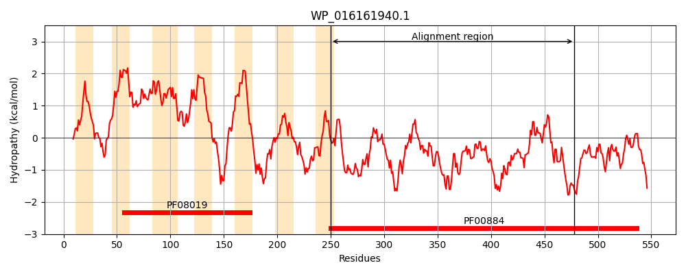
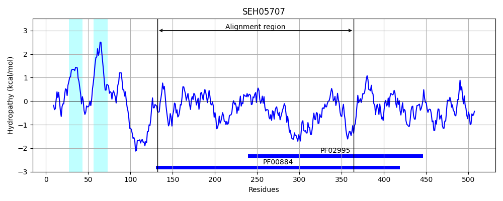
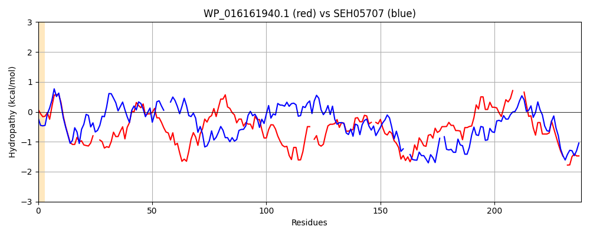

Hit Accession: SEH05707
Hit TCID: 2.A.127.1.7
Hit Description: gnl|BL_ORD_ID|20127 gnl|TC-DB|SEH05707|2.A.127.1.7 Phosphoethanolamine transferase EptB [Thiotrichales bacterium HS_08]
Mach Len: 238
e:0.000000
Query TMS Count : 7
Hit TMS Count: 2
TMS-Overlap Score: 0.300000
Predicted Substrates:None
BLAST Alignment:
Score: 162 , Bit scores: 67 bits, E-value: 9.3e-12, Alignment length: 238, Percentage identity: 26
Query: 250 VVFIIGETTRWDHMGILGYSRNTTP--ELEKEKNLVAFRGYSCDTATKLSLRCMFVRQGGAEDNPQRTLKEQNVFAVLHQLGFNGNLYAMQSEMWFYSNTMANNIAYREQIGAEPRNRGK-SVDDMLLVEEMKRGMAQGNASGKHLI-ILHTKGSHFNYTQRYPRSFAQWKPECVGVDNKCSKAELINSYDNSVTYVDHFIVSVLDQLR----DKKAIVFYAADHGESINE-REHLHG 478
V+ II E+ R DH+ I GY R TTP ++ + + S T T SL +F G + K ++ + G + W + T N+ Y + I + R DD+L V+ + + + + K +LH G+H+ Y+ P WKP + N ++IN YDNS+ Y D + L L + I+ +DHGE E ++ HG
Sbjct: 132 VLMIIQESLRGDHLSIFGYHRKTTPIQDIFFKNAYLFINAISNRTTTGPSLSTLFT--GTIRVIKKEIFKRSLIWQYAKRSGKHTFYITSHWIEWNFMKTAFTNLKYIDFINSPLAARASIGRDDILTVDIFNQYLTKIKNNNKPFFGVLHFSGTHYPYST--PSQHRIWKPSKSSM-NPNHIDKVINQYDNSIRYNDFVMGKALKHLEKLGLSENTIIILTSDHGEGFYEHKKFFHG 364 | Protein Hydropathy Plots: |
|---|
|  |  |
Pairwise Alignment-Hydropathy Plot:
|
|---|
|  |